Flight planning
GIS595-004/603; MEA592-006/601:
UAS Mapping for 3D Modeling
Justyna Jeziorska
Center for Geospatial Analytics
North Carolina State University
Objectives
- Describe phases of flight planning
- Understand safety procedures and checklists
- Understand the role of Ground Control Points and its distirbution and accuracy
- Utilize flight planning software
UAS Photogrammetric process
Throughout the whole process, it is important to remember
- What is the aim or the project? and
- What will be the data used for?
Flight planning
- a multistep process
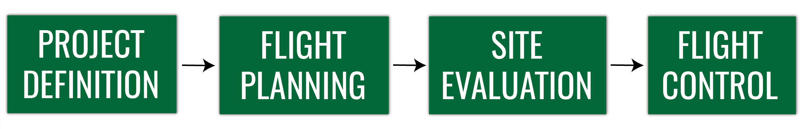
Throughout the whole process, it is important to remember
- What is the aim or the project? and
- What will be the data used for?
Project definition
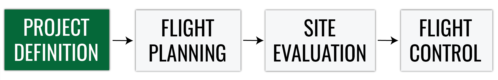- defining the scope of the project
- choosing UAS and sensor
- assesing the cost, labor and time consumption
- collecting information about terrain
Project definition
- defining the area and resolution based on
- UAS and sensor capabilies
- size of mapping area
- terrain constraints
- project requirements
Project definition
- evaluating the legal constrains, obtaining permissions
- defining the coordinate system
- dependent on the desired coordinate system of the final data
- consistent with the coordinate system of GCP survey
Flight planning
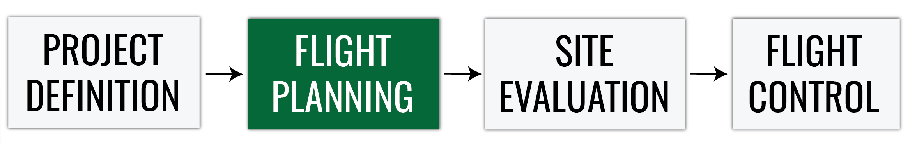- mission area assesment
- planning geometric parameters
- choosing flight planning and flight logging platform
- preliminary weather assesment (climate, season, forecasts)
- creating a flight plan (software specific)
Placing Ground Control Points (GCPs)
- A minimum number of 5 GCPs is recommended.
- 5 to 10 GCPs are usually enough, even for large projects.
- In cases that the topography of the area is complex, use more GCPs
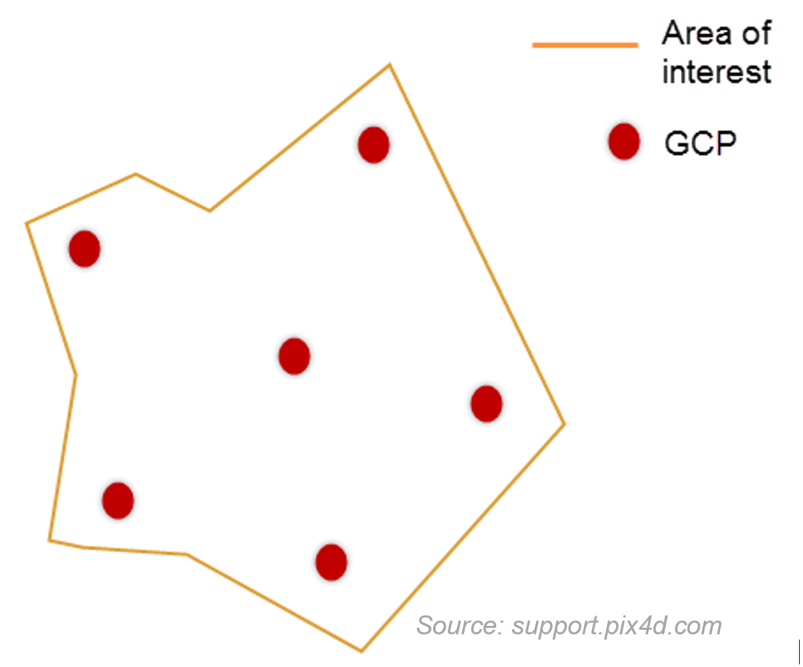
- The GCPs should be distributed evenly in the area
- Do not place the GCPs exactly at the edges of the area
Placing Ground Control Points (GCPs)
Before measuring the GCPs coordinates, the following items must be defined:
- GCP coordinate system
- GCP accuracy
- Topographic equipment (total station or hand held GPS?)
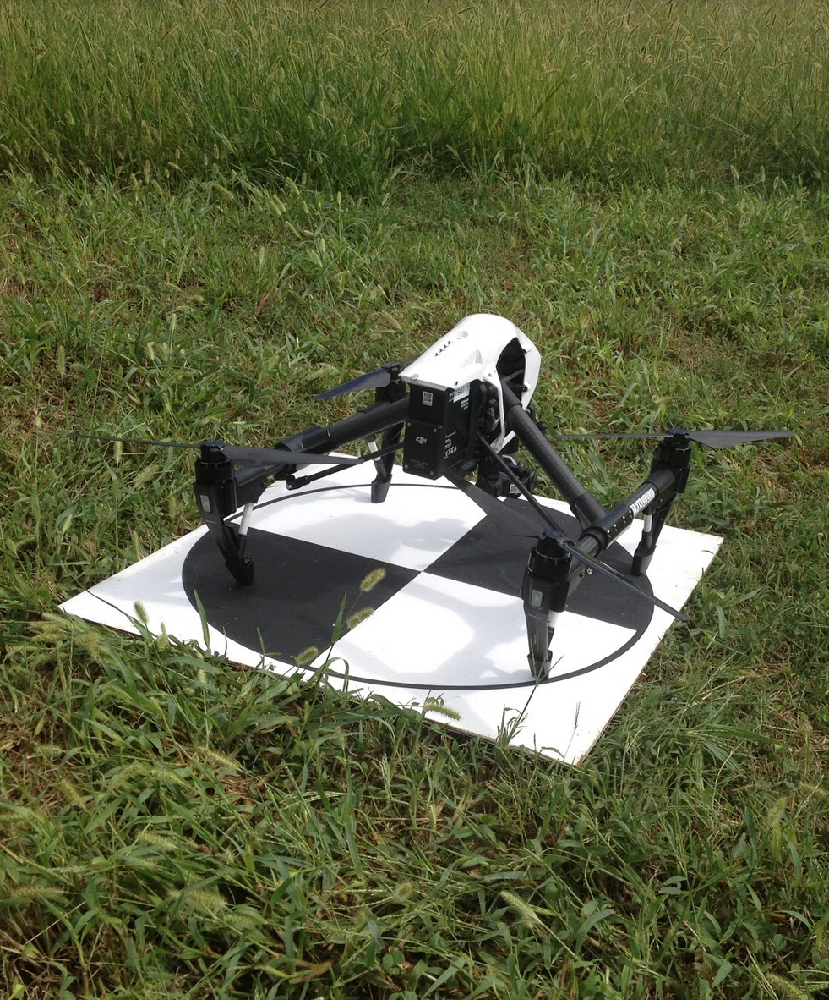
GCPs Accuracy
Factors for defining GCP acuracy:
- Accuracy needed for the final results
- Ground Sampling Distance* of the images:
- GCP target size: 5-10 x GSD
- GCP accuracy: at least 0.1 GSD
- * distance between two consecutive pixel centers measured on the ground
Ground Sampling Distance
Distance between two consecutive pixel centers measured on the ground:
- bigger GSD = lower spatial resolution
GSD depends on
- flight altitude
- camera focal length
- camera resolution (pixel size)
Site evaluation and checklists
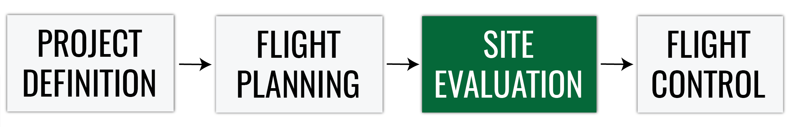- terrain check – high obstacles in the take-off, mission, landing and alternative landing locations
- ask the locals about possible air traffic or ground activities
- weather check
- temperature effects battery life
- most of the UAS can’t operate in rain.
- use checklists, don't rely on your memory!
- sample checklists: paper (for Phantom) and RMUS app
Site evaluation and checklists
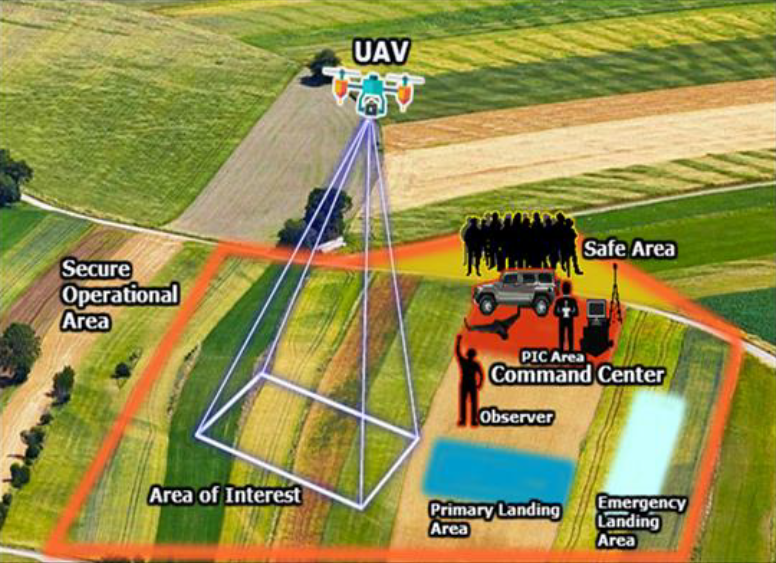Site evaluation and checklists
Preflight inspection is required under Part 107.49;
the Remote Pilot in Comand (RPIC) is required to develop a preflight inspection checklist if the manufacture has not developed one.
NCDOT UAS Operational Procedures Guide
- The checklist is usually integrated into the UAS flight software or can be obtained from the UAS vendor
- In case that is not available, a standard Flight Checklist should be made and followed by the flight crew
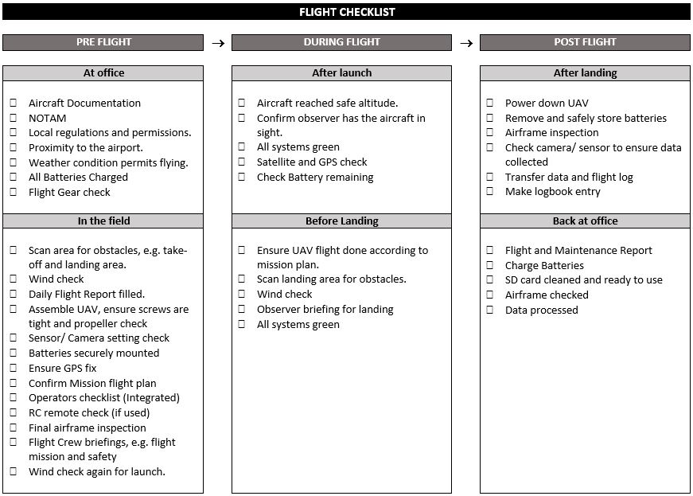
Flight control
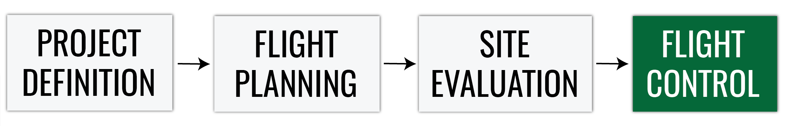- The UAS RPIC should launch, operate, and recover from preset locations so that the aircraft will fly according to the mission plan.
- After the UAS is launched, the flight crew should have a clear view of the aircraft at all times, called Visual Line of Sight (VLOS). Observation locations should be selected for the maximum line of sight throughout the planned flight operations area (Part 107.31).
Flight control
- To ensure the flight is going according to the flight plan, the RP, PMC and VO (if used) must be able to maintain effective communication with each other at all times (Part 107.33).
- Upon any failure during the flight or any loss of visual contact with the UAS, the RPIC should command the aircraft back to the recovery location or utilize the built-in fail-safe features to recover the aircraft
Lake Wheeler test site
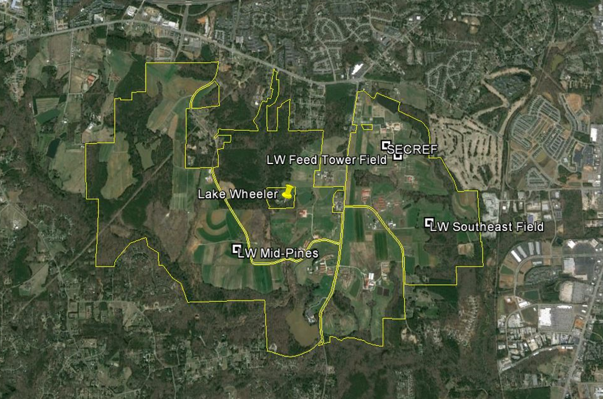Lake Wheeler test site
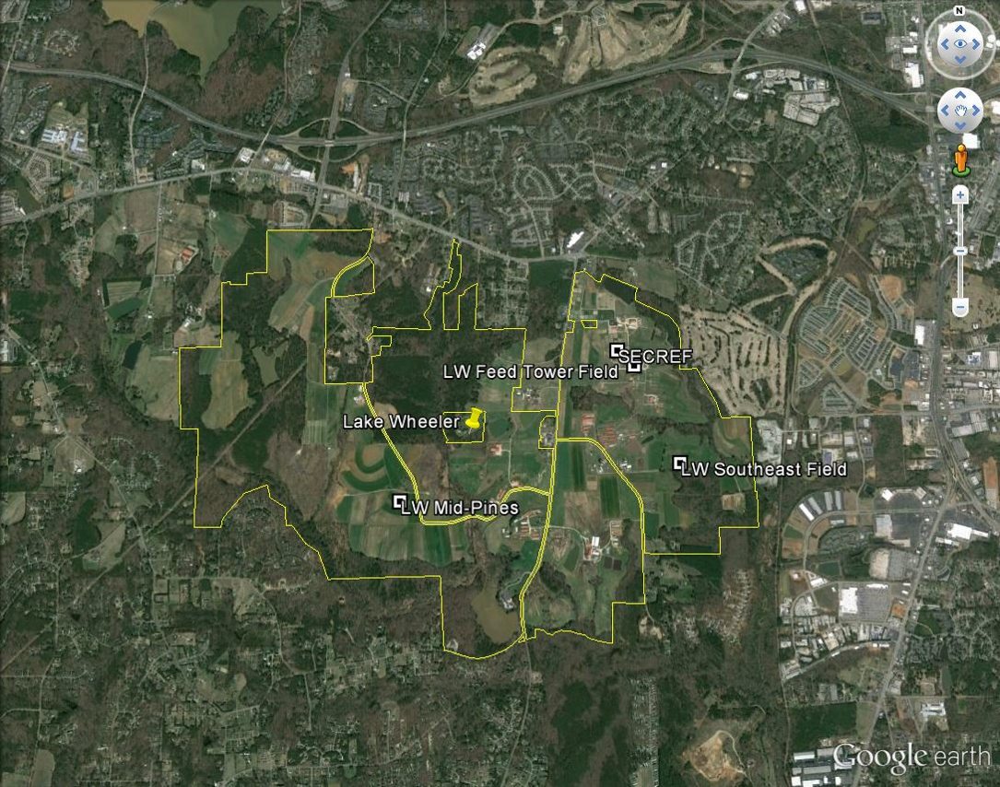Lake Wheeler test site
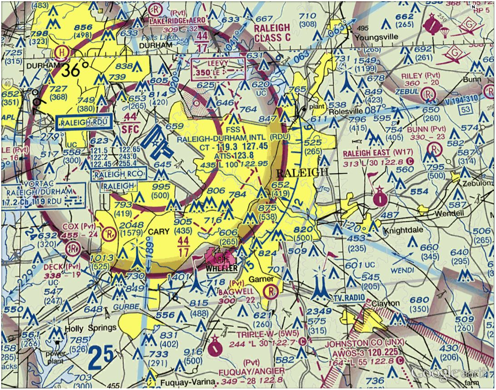Lake Wheeler test site
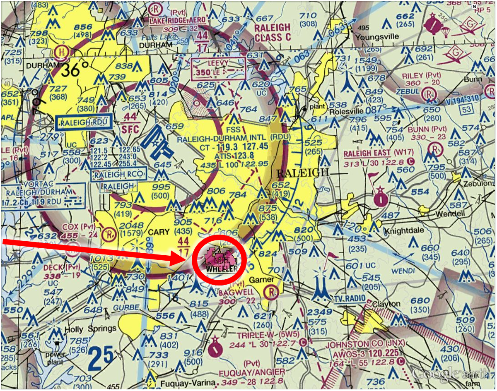Flight planning
Flight planning software
- Multiple available platforms
- Some are dedicated for specific UAS and sold with the system by the manufacturer
- Trimble UAS - Trimble Aerial Imaging
- senseFly UAS - eMotion 3
- DJI - DJI Ground Station Pro Litchi
- Microdrones - mdCOCKPIT
- Yuneec - UAV Toolbox
- Some are more universal and can work with variety of platforms:
- UgCS
- Open Source Mission Planner - mostly for DIY drones
Flight planning
Trimble Aerial Imaging


What we have learned
- Phases of UAS flight planning
- Safety procedures and checklists for safe flight operations
- Plan a flight in the Trimble Aerial Imaging sofware
- how does our study site look like